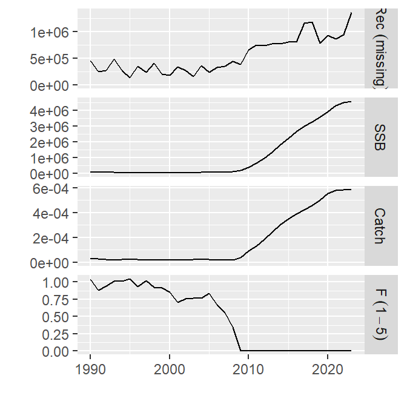
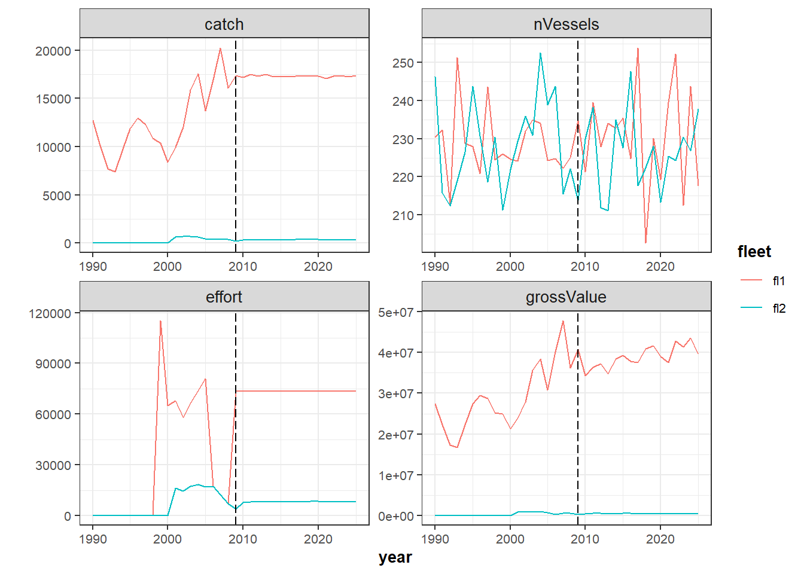
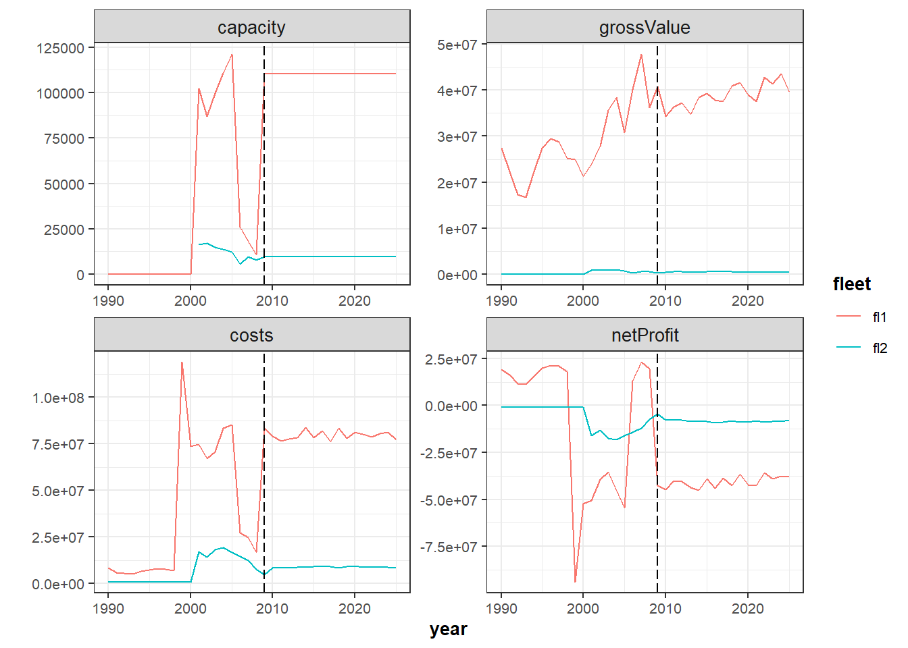
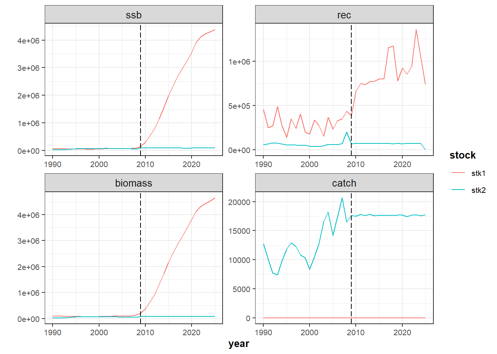
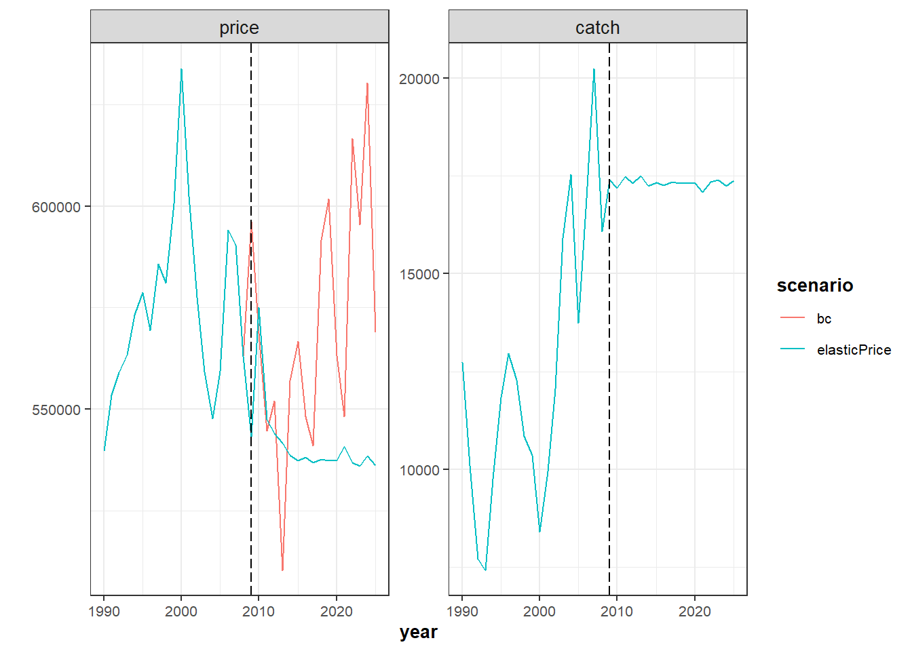
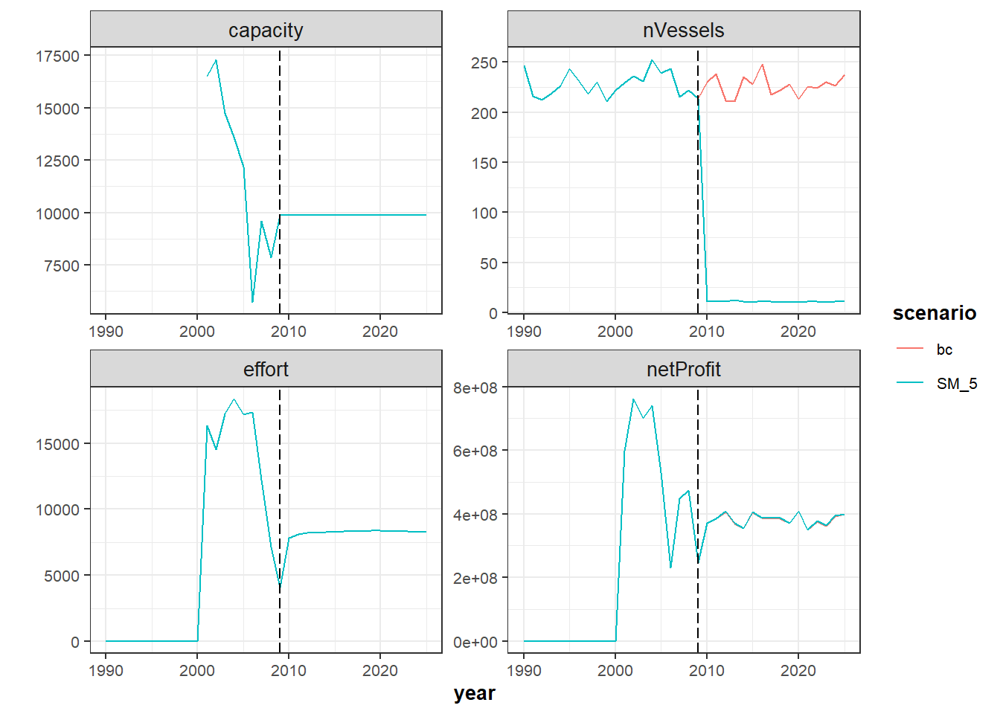

Introductory example. Part 2.
15 may., 2020

Aim
FLBEIA provides a battery of tutorials for learning how to use this software. This tutorial is a practical guide about a simple implementation of FLBEIA but with several fleets and stocks. The aim of this example is to become familiar with the required object for development of bio-economic impact assessments of fisheries management strategies.
In this tutorial a simple case study, named multi is explored and run in FLBEIA. Then, the outputs of FLBEIA are analized, summarized and plotted. Once the user has understood the structure and outputs of FLBEIA, let’s start playing! Several scenarios will be run. In the current tutorial, the scenarios will be related to the economic issues.
Help & Manual
FLBEIA includes extensive facilities for accessing documentation and searching for help. FLBEIA manual can be download from Github or within the ‘doc’ folder of the package installation. Additionally, the help() function and ? help operator in R provide access to the documentation pages. Typing help(package = FLBEIA) in the R console you access to the documentation for package FLBEIA , user guides and help pages. For example, typing help(bioSum) in the R console you access to help page of summary functions for the FLBEIA output.
The exact way to define the objects used to set the simulation is described in the FLBEIA manual. Nevertheless, the objects to set the simulation do not need to be defined for the following examples, as the datasets one and oneIt from the FLBEIA package will be used. For details on these objects, see FLBEIA manual, Section 5.2 or type ?FLBEIA in the R console.
To see all the datasets available in the FLBEIA package:
data(package='FLBEIA')Required packages to run this tutorial
To follow this tutorial you should have installed the following packages:
- CRAN: ggplot2
- FLR: FLCore, FLAssess, FLash, FLBEIA, FLFleet, [ggplotFL](http://www.flr-project.org/ggplotFL/
If you are using Windows, please use 64-bit R version because some of the packages do not work in 32-bit.
install.packages( c("ggplot2"))
install.packages( c("FLCore", "FLFleet", "FLBEIA", "ggplotFL",
"FLash", "FLAssess", "FLXSA"),
repos="http://flr-project.org/R")It has to be noted that packages FLCore, FLFleets and FLBEIA have to be installed in this exact order, as alternative orders can cause some problems.
The last version (not consolidated version -under development-) of FLBEIA can be installed from GitHub.
Load all the necessary packages.
# This chunk loads all necessary packages.
library(FLBEIA)
library(FLCore)
library(FLFleet)
library(FLXSA)
library(FLash)
library(ggplotFL)EXAMPLE: 2 stocks, 2 fleets with two metiers each, 4 seasons and 1 iteration.
Multi dataset has 2 stocks, stk1 is age structured and stk2 is aggregated in biomass. The historic data goes from 1990 to 2008 and projection from 2009 to 2025. The time step is seasonal, with 4 seasons (quarters) by year.
- Operating model: Population dynamics
- Population dynamics of stk1: Age Structured Population Growth. Beverthon and Holt.
- Population dynamics of stk2: Biomass Dynamic Population Growth. Pella-Tomlinson.
- Fleet dynamics of fl1: Simple Mixed Fisheries Behaviour. Two metiers.
- Fleet dynamics of fl2: Fixed effort. Two metiers
- Covariates dynamics: Capital dynamics (SCD).
- Management Procedure
- Observation: perfect observation
- Assessment: no assessment
- Management advice stk1: IcesHCR
- Management advice stk2: Annual TAC
Load data
rm(list=ls())
data(multi)ls() command return a vector of character strings giving the names of the objects in the environment, in this case we can see the objects stored in multi.
ls()character(0)Show the class of each of the objects with sapply function.
# Show the class of each of the objects.
sapply(ls(), function(x) class(get(x)))named list()Run FLBEIA.
In the code below FLBEIA is run with the arguments stored in dataset multi.
SM <- FLBEIA(biols = multiBio, # FLBiols object with 2 FLBiol element for stk1.
SRs = multiSR, # A list with 1 FLSRSim object for stk1.
BDs = multiBD, # A list with 1 FLBDSim object for stk2.
fleets = multiFl, # FLFleets object with on fleet.
covars = multiCv, # A list with socio - economic data.
indices = NULL, # Indices not available.
advice = multiAdv, # A list with two elements 'TAC' and 'quota.share'.
main.ctrl = multiMainC, # A list with one element to define the start/end
# of the simulation.
biols.ctrl = multiBioC, # A list with one element to select the model
# to simulate the stock dynamics.
fleets.ctrl = multiFlC, # A list with several elements to select fleet
# dynamic models and store additional parameters.
covars.ctrl = multiCvC, # Covars control (additional data for capital dynamics).
obs.ctrl = multiObsC, # A list with one element to define how the
# stock observed ("PerfectObs").
assess.ctrl = multiAssC, # A list with one element to define how the
# stock assesSMent model used ("NoAssesSMent").
advice.ctrl = multiAdvC) # A list with one element to define how the TAC advice
# is obtained ("IcesHCR").FLBEIA function returns a list with several objects, let’s print the names of the objects and their classes.
names(SM) [1] "biols" "fleets"
[3] "covars" "advice"
[5] "stocks" "indices"
[7] "BDs" "SRs"
[9] "fleets.ctrl" "pkgs.versions"Summarizing results
FLBEIA has several functions to summaryze the results in data frames (bioSum, fltSum, etc.). These data frames will allow us to use methods available in R to visualize and analyze the results. Information can be summarized in two formats:
- Long format: There is one column, named indicator, for storing the name of the indicator and a second column for the numeric value of the indicator. The long format is recommendable to work with
ggplot2functions. - Wide format: where each column corresponds to one indicator. The wide format is more efficient in terms of memory allocation and speed of computation.
The quantile version of the summaries, (bioSumQ, fltSumQ, etc.), returns the quantiles of indicators.
Summary functions
advSum, advSumQ: Data frame with indicators related to the management advice (TAC). Indicators are: “catch”, “discards”, “discRat”, “landings”, “quotaUpt” and “tac”.
bioSum, bioSumQ: Data frame with the biological indicators. Indicators are: “biomass”, “catch”, “catch.iyv”, “discards”, “disc.iyv”, “f”, “landings”, “land.iyv”, “rec” and “ssb”.
fltSum, fltSumQ: Data frame with indicators at fleet level. Indicators are: “capacity”, “catch”, “costs”, “discards”, “discRat”, “effort”, “fcosts”, “gva”, “grossValue”, “landings”, “fep”, “nVessels”, “price”, “grossSurplus”, “netProfit”, “quotaUpt”, “salaries”, “vcosts” and “profitability”. Definition of economics indicators:
- discRat: Discount rate.
- grossValue: value of landings (landings x prices)
- Operating costs: Landing Fee x Gross value + Fuel cost x Effort + Other variable costs x effort + Fixed costs x Vessel.
- Gross Value added: Gross value - Operating Costs
- fep: Full equity profit defined as Gross Surplus - depreciation costs
- grossSurplus: Gross value added - Labour costs, where Labour costs: share of the landings x Gross value + Fixed labour costs x Crew.
- Oportunity costs: Capital x interest rate free of risk.
- netProfit: fep - Oportunity costs
- quotaUpt: Quota uptaken.
- profitability: grossSurplut/Gross Value
fltStkSum, fltStkSumQ : Data frame with indicators at fleet and stock level. Indicators are: “landings”, “discards”, “catch”, “price”, “quotaUpt”, “tacshare”, “discRat” and “quota”.
npv: A data frame with the net present value per fleet over the selected range of years.
mtSum, mtSumQ : Data frame with indicators at fleet level. Indicators are: “effshare”, “effort”, “income” and “vcost”.
mtStkSum, mtStkSumQ : Data frame with indicators at fleet and metier level. Indicators are: “catch”, “discards”, “discRat”, “landings” and “price”.
riskSum: A data frame with the risk indicators. Indicators are: “pBlim”, “pBpa” and “pPrflim”.
vesselSum, vesselSumQ: Data frame with Indicators at vessel level. Indicators are: “catch”, “costs”, “discards”, “discRat”, “effort”, “fcosts”, “gva”, “income”, “landings”, “netProfit”, “price”, “profits”, “quotaUpt”, “salaries”, “vcosts” and “profitability”.
vesselStkSum, vesselStkSumQ: Data frame with indicators at vessel and stock level. Indicators are: “landings”, “discards”, “catch”, “price”, “quotaUpt”, “tacshare”, “discRat” and “quota”.
summary_flbeia: An array with four dimensions: stock, year, iteration, indicator. Indicators are: “recruitment”, “ssb”, “f”, “biomass”, “catch”, “landings” and “discards”.
ecoSum_damara: ecoSum function built in the framework of Damara project.
Long format.
SM$fleets <- setUnitsNA(SM$fleets)
SM_bio <- bioSum(SM, long = TRUE) # Data frame (DF) with biological indicators.
SM_adv <- advSum(SM, long = TRUE) # DF with indicators related with man. advice (TAC).
SM_flt <- fltSum(SM, long = TRUE) # DF with indicators at fleet level.
SM_fltStk <- fltStkSum(SM, long = TRUE) # DF with indicators at fleet and stock level.
SM_mt <- mtSum(SM, long = TRUE) # DF with indicators at fleet.
SM_mtStk <- mtStkSum(SM, long = TRUE) # DF with indicators at fleet and metier level.
SM_vessel <- vesselSum(SM, long = TRUE) # DF with indicators at vessel level.
SM_vesselStk <- vesselStkSum(SM, long = TRUE) # DF with indicators at vessel and stock level.
SM_npv <- npv(SM, y0 = '2014') # DF with net present value per fleet over
# the selected range of years.
SM_risk <- riskSum(SM, Bpa= c(stk1= 135000, stk2 = 124000), Blim =c(stk1 = 96000, stk2 = 89000),
Prflim = c(fl1 = 0, fl2 = 0), flnms = names(SM$fleets),
years = dimnames(SM$biols[[1]]@n)[[2]],
scenario = 'SM') # DF with risk indicators (pBlim, pBpa and pPrlim).
# Exploring data frames
head(SM_bio); unique(SM_bio$indicator)
head(SM_adv); unique(SM_adv$indicator)
head(SM_flt); unique(SM_flt$indicator)
head(SM_fltStk); unique(SM_fltStk$indicator)
head(SM_mt); unique(SM_mt$indicator)
head(SM_mtStk); unique(SM_mtStk$indicator)
head(SM_vessel); unique(SM_vessel$indicator)
head(SM_vesselStk); unique(SM_vesselStk$indicator)
head(SM_risk); unique(SM_risk$indicator)Wide format.
SM_bio_l <- bioSum(SM, long = FALSE)
SM_adv_l <- advSum(SM, long = FALSE)
SM_flt_l <- fltSum(SM, long = FALSE)
SM_fltStk_l <- fltStkSum(SM, long = FALSE)
SM_mt_l <- mtSum(SM, long = FALSE)
SM_mtStk_l <- mtStkSum(SM, long = FALSE)
SM_vessel_l <- vesselSum(SM, long = FALSE)
SM_vesselStk_l <- vesselStkSum(SM, long = FALSE)
# Exploring data frames
head(SM_bio_l, 2)
head(SM_adv_l, 2)
head(SM_flt_l, 2)
head(SM_fltStk_l, 2)
head(SM_mt_l, 2)
head(SM_mtStk_l, 2)
head(SM_vessel_l, 2)
head(SM_vesselStk_l, 2)Plotting results
You can show results using the default plots in FLCore package.
#plot(SM$biols[[1]]) # There are too much data to display them correctly.
plot(SM$stocks[[1]]) # Stock 2 is in biomass, 'plot(SM$stocks[[2]])' function does not work.
Additionally you can plot results using plotFLBiols, plotFLFleets and plotCatchFl. The plots will be saved in your working directory as a pdf file.
# set your own working directory.
#myWD <- "C:/use/escritorio/ExampleMulti/"
#setwd(myWD)
plotFLBiols(SM$biols, pdfnm = "SM")
plotFLFleets(SM$fleets, pdfnm ="SM")
plotfltStkSum(SM, pdfnm ="SM")
plotEco(SM, pdfnm ='SM')You can also use the function ggplot to generate additional figures. In the current example we will plot the economic related outputs.
inds <- c('catch','nVessels', 'effort', 'grossValue')
d <- rbind(subset(SM_flt,indicator %in% inds ))
d$indicator <- factor( d$indicator, levels=inds)
d$scenario <- factor(d$scenario)
d$year <- as.numeric(d$year)
p <- ggplot( data=d, aes(x=year, y=value, color=fleet)) +
geom_line() +
facet_wrap(~ indicator, scales="free") +
geom_vline(xintercept = multiMainC$sim.years[['initial']], linetype = "longdash") +
theme_bw() +
theme(text=element_text(size=10),
title=element_text(size=10,face="bold"),
strip.text=element_text(size=10)) +
ylab("")
print(p)
inds <- c('capacity', 'grossValue', 'costs', 'netProfit')
d <- rbind(subset(SM_flt,indicator %in% inds ))
d$indicator <- factor( d$indicator, levels=inds)
d$scenario <- factor(d$scenario)
d$year <- as.numeric(d$year)
p <- ggplot( data=d, aes(x=year, y=value, color=fleet)) +
geom_line() +
facet_wrap(~ indicator, scales="free") +
geom_vline(xintercept = multiMainC$sim.years[['initial']], linetype = "longdash") +
theme_bw() +
theme(text=element_text(size=10),
title=element_text(size=10,face="bold"),
strip.text=element_text(size=10)) +
ylab("")
print(p)
LET`S PLAY
In this example the economic information is available. In this section we will focus on economic variables, processess and indicators.
Price
Imagine that the unit of the prices are wrong, the price should be by tonnes instead by kilogram because the units of catches are tonnes. Then, we can solve the error multipliying the all prices by 1000.
for (i in names(multiFl)) {
for(j in names(multiFl[[i]]@metiers)) {
for(k in names(multiFl[[i]]@metiers[[j]]@catches)) {
multiFl[[i]]@metiers[[j]]@catches[[k]]@price <-
multiFl[[i]]@metiers[[j]]@catches[[k]]@price*1000
}
}
} Run FLBEIA and generate the base case scenario.
SM <- FLBEIA(biols = multiBio, SRs = multiSR, BDs = multiBD, fleets = multiFl, covars = multiCv,
indices = NULL,advice = multiAdv, main.ctrl = multiMainC, biols.ctrl = multiBioC,
fleets.ctrl = multiFlC, covars.ctrl = multiCvC, obs.ctrl = multiObsC, assess.ctrl = multiAssC,
advice.ctrl = multiAdvC) Summarzing the results
SM$fleets <- setUnitsNA(SM$fleets)
SM_bio <- bioSum(SM, long = TRUE) # Data frame (DF) with biological indicators.
SM_adv <- advSum(SM, long = TRUE) # DF with indicators related with man. advice (TAC).
SM_flt <- fltSum(SM, long = TRUE) # DF with indicators at fleet level.
SM_fltStk <- fltStkSum(SM, long = TRUE) # DF with indicators at fleet and stock level.
SM_mt <- mtSum(SM, long = TRUE) # DF with indicators at fleet.
SM_mtStk <- mtStkSum(SM, long = TRUE) # DF with indicators at fleet and metier level.
SM_vessel <- vesselSum(SM, long = TRUE) # DF with indicators at vessel level.
SM_vesselStk <- vesselStkSum(SM, long = TRUE) # DF with indicators at vessel and stock level.
SM_npv <- npv(SM, y0 = '2014') # DF with net present value per fleet over a selected range of years.
SM_risk <- riskSum(SM, stknms = names(SM$biols), Bpa= c(stk1= 135000, stk2 = 124000),
Blim =c(stk1 = 96000, stk2 = 89000),
Prflim = c(fl1 = 0, fl2 = 0), flnms = names(SM$fleets),
years = dimnames(SM$biols[[1]]@n)[[2]],
scenario = 'SM') # DF with risk indicators (pBlim, pBpa and pPr).Plots
plotFLBiols(SM$biols, pdfnm = "SM_pricex1000")
plotFLFleets(SM$fleets, pdfnm ="SM_pricex1000")
plotfltStkSum(SM, pdfnm ="SM_pricex1000")
plotEco(SM, pdfnm ='SM_pricex1000')You can also use the function ggplot to generate additional figures.
inds <- c('capacity','costs', 'grossValue', 'gva')
d <- rbind(subset(SM_flt,indicator %in% inds ))
d$indicator <- factor( d$indicator, levels=inds)
d$scenario <- factor(d$scenario)
d$year <- as.numeric(d$year)
p <- ggplot( data=d, aes(x=year, y=value, color=fleet)) +
geom_line() +
facet_wrap(~ indicator, scales="free") +
geom_vline(xintercept = multiMainC$sim.years[['initial']], linetype = "longdash") +
theme_bw() +
theme(text=element_text(size=10),
title=element_text(size=10,face="bold"),
strip.text=element_text(size=10)) +
ylab("")
print(p)
Plotting some biological indicators
inds <- c('ssb','rec', 'biomass', 'catch')
d <- rbind(subset(SM_bio,indicator %in% inds ))
d$indicator <- factor( d$indicator, levels=inds)
d$scenario <- factor(d$scenario)
d$year <- as.numeric(d$year)
p <- ggplot( data=d, aes(x=year, y=value, color=stock)) +
geom_line() +
facet_wrap(~ indicator, scales="free") +
geom_vline(xintercept = multiMainC$sim.years[['initial']], linetype = "longdash") +
theme_bw() +
theme(text=element_text(size=10),
title=element_text(size=10,face="bold"),
strip.text=element_text(size=10)) +
ylab("")
print(p)
Plotting TAC
plotFLBiols(SM$biols, pdfnm = "SM_pricex1000")
plotFLFleets(SM$fleets, pdfnm ="SM_pricex1000")
plotfltStkSum(SM, pdfnm ="SM_pricex1000")
plotEco(SM, pdfnm ='SM_pricex1000')inds <- c('tac')
d <- rbind(subset(SM_adv,indicator %in% inds ))
d$indicator <- factor( d$indicator, levels=inds)
d$scenario <- factor(d$scenario)
d$year <- as.numeric(d$year)
p <- ggplot( data=d, aes(x=year, y=value, color=stock)) +
geom_line() +
facet_wrap(~ indicator, scales="free") +
geom_vline(xintercept = multiMainC$sim.years[['initial']], linetype = "longdash") +
theme_bw() +
theme(text=element_text(size=10),
title=element_text(size=10,face="bold"),
strip.text=element_text(size=10)) +
ylab("")
print(p)
Price Dynamics
The price function is fixedprice: prices are given as input data and are unchanged within the simulation. Now change the price dynamics defining elasticPrice model in one fleet fl1 and stock stk2. For a detailed description of this function see page 19 of the Manual. The price dynamics function implemented in FLBEIA is described in Kraak et al. [2004]. This function set a base price and base landings to calculate the new price using an elasticity parameter. If the base landings are bigger than current landings the price is increased and decreased if the contrary occurs. Although price is stored at metier and stock level in FLFleetsExt,this function assumes that is common to all metiers within a fleet and it is calculated at fleet level.
# Describe the price function
multiFlC_1 <- multiFlC
multiFlC_1$fl1$stk2$price.model <- "elasticPrice" # Set the price model.
# Include the new paramenter (elasticity)
multiFl_1 <- multiFl
elasticity <- 0.5 # We assume that the elasticity is 0.2.
multiFlC_1$fl1$stk2$pd.els <- array(elasticity, dim = c(1, 4, 1),
dimnames= list(age = 'all', season = c(1:4), iter = 1))
# Reference landings: year 2008
La0_met1 <- multiFl$fl1@metiers$met1@catches$stk2@landings.n[,as.character(2008),,,] *
multiFl$fl1@metiers$met1@catches$stk2@landings.wt[,as.character(2008),,,]
La0_met2 <- multiFl$fl1@metiers$met2@catches$stk2@landings.n[,as.character(2008),,,] *
multiFl$fl1@metiers$met2@catches$stk2@landings.wt[,as.character(2008),,,]
pd.La0 <- unitSums(La0_met1 +La0_met2)
multiFlC_1$fl1$stk2$pd.La0 <- array(pd.La0, dim = c(1,4, 1),
dimnames= list(age = 'all', season = c(1:4), iter = 1))
# Reference price
Pa0_met1 <- multiFl$fl1@metiers$met1@catches$stk2@price[,as.character(2008),,,]
Pa0_met2 <- multiFl$fl1@metiers$met2@catches$stk2@price[,as.character(2008),,,]
pd.Pa0 <- unitMeans((La0_met1*Pa0_met1 +La0_met2*Pa0_met2)/(La0_met1+La0_met2))
multiFlC_1$fl1$stk2$pd.Pa0 <- array(pd.Pa0, dim = c(1,4, 1),
dimnames= list(age = 'all', season = c(1:4), iter = 1))
multiFlC_1$fl1$stk2$pd.total <- TRUE # If TRUE: price is calculated using total landings, and
# if FALSE: fleet's landings are used to estimate the price.
SM_1 <- FLBEIA(biols = multiBio, SRs = multiSR, BDs = multiBD, fleets = multiFl_1,
covars = multiCv, indices = NULL, advice = multiAdv, main.ctrl = multiMainC,
biols.ctrl = multiBioC, fleets.ctrl = multiFlC_1, covars.ctrl = multiCvC,
obs.ctrl = multiObsC, assess.ctrl = multiAssC, advice.ctrl = multiAdvC)Plot price and grossValue to see the impact that the price dynamics have on the results.
SM_1$fleets <- setUnitsNA(SM_1$fleets)
SM_1_fltStk <- fltStkSum(SM_1, scenario ='elasticPrice', long = TRUE)
SM_x <- rbind(SM_fltStk, SM_1_fltStk)
inds <- c('price', 'catch', 'effort', 'capacity')
d <- rbind(subset(SM_x,indicator %in% inds & fleet == 'fl1' & stock == 'stk2'))
d$indicator <- factor( d$indicator, levels=inds)
d$scenario <- factor(d$scenario)
d$year <- as.numeric(d$year)
p <- ggplot( data=d, aes(x=year, y=value, color=scenario)) +
geom_line() +
facet_wrap(~ indicator, scales="free") +
geom_vline(xintercept = multiMainC$sim.years[['initial']], linetype = "longdash") +
theme_bw() +
theme(text=element_text(size=10),
title=element_text(size=10,face="bold"),
strip.text=element_text(size=10)) +
ylab("")
print(p)
SM_1_flt <- fltSum(SM_1, scenario ='elasticPrice', long = TRUE)
SM_x <- rbind(SM_flt, SM_1_flt)
SM_x <- subset(SM_x, fleet == 'fl1')
inds <- c('grossValue','costs','salaries','netProfit')
d <- rbind(subset(SM_x,indicator %in% inds ))
d$indicator <- factor( d$indicator, levels=inds)
d$scenario <- factor(d$scenario)
d$year <- as.numeric(d$year)
p <- ggplot( data=d, aes(x=year, y=value, color=scenario)) +
geom_line() +
facet_wrap(~ indicator, scales="free") +
geom_vline(xintercept = multiMainC$sim.years[['initial']], linetype = "longdash") +
theme_bw() +
theme(text=element_text(size=10),
title=element_text(size=10,face="bold"),
strip.text=element_text(size=10)) +
ylab("")
print(p)
Fixed Costs
Fixed costs (repair, maintenance and other) of fl1 decreases 80%. How does this decrease impacts on the economic results?
multiFl_2 <- multiFl
multiFl_2$fl1@fcost <- multiFl_2$fl1@fcost*(1-0.8)
SM_2 <- FLBEIA(biols = multiBio, SRs = multiSR, BDs = multiBD, fleets = multiFl_2,
covars = multiCv, indices = NULL, advice = multiAdv, main.ctrl = multiMainC,
biols.ctrl = multiBioC, fleets.ctrl = multiFlC, covars.ctrl = multiCvC,
obs.ctrl = multiObsC, assess.ctrl = multiAssC, advice.ctrl = multiAdvC) We can visualize the results of both simulations (SM aganist SM_2) using ggplot.
SM_2$fleets <- setUnitsNA(SM_2$fleets)
SM_2_flt <- fltSum(SM_2, scenario = 'SM_2', long = TRUE)
SM_x <- rbind(SM_flt, SM_2_flt)
inds <- c('costs','fcosts','grossValue','netProfit')
d <- rbind(subset(SM_x,indicator %in% inds & fleet == 'fl1'))
d$indicator <- factor( d$indicator, levels=inds)
d$scenario <- factor(d$scenario)
d$year <- as.numeric(d$year)
p <- ggplot( data=d, aes(x=year, y=value, color=scenario)) +
geom_line() +
facet_wrap(~ indicator, scales="free") +
geom_vline(xintercept = multiMainC$sim.years[['initial']], linetype = "longdash") +
theme_bw() +
theme(text=element_text(size=10),
title=element_text(size=10,face="bold"),
strip.text=element_text(size=10)) +
ylab("")
print(p)
Variable Costs
Variable costs decreases a 50% for fl2 and for metiers met1 and met2. How does this decrease affect to the economic results?
multiFl_3 <- multiFl
multiFl_3$fl2@metiers$met1@vcost <- multiFl_3$fl2@metiers$met1@vcost*(1-0.5)
multiFl_3$fl2@metiers$met2@vcost <- multiFl_3$fl2@metiers$met2@vcost*(1-0.5)
SM_3 <- FLBEIA(biols = multiBio, SRs = multiSR, BDs = multiBD, fleets = multiFl_3,
covars = multiCv, indices = NULL, advice = multiAdv, main.ctrl = multiMainC,
biols.ctrl = multiBioC, fleets.ctrl = multiFlC, covars.ctrl = multiCvC,
obs.ctrl = multiObsC, assess.ctrl = multiAssC, advice.ctrl = multiAdvC) Compare results aganist base case scenario.
SM_3$fleets <- setUnitsNA(SM_3$fleets)
SM_3_flt <- fltSum(SM_3, scenario = 'SM_3', long = TRUE)
inds <- c('costs','vcosts','grossValue','netProfit')
d <- rbind(subset(SM_flt,indicator %in% inds & fleet == 'fl2'),
subset(SM_3_flt, indicator %in% inds & fleet == 'fl2'))
d$indicator <- factor( d$indicator, levels=inds)
d$year <- as.numeric(d$year)
p <- ggplot( data=d, aes(x=year, y=value, color=scenario)) +
geom_line() +
facet_wrap(~ indicator, scales="free") +
geom_vline(xintercept = multiMainC$sim.years[['initial']], linetype = "longdash") +
theme_bw() +
theme(text=element_text(size=10),
title=element_text(size=10,face="bold"),
strip.text=element_text(size=10)) +
ylab("")
print(p)
Crewshare
Now, imagine that the crew share remuneration system changes for ``fl1```` and now the percentage of crew share is 50%.
multiFl_4 <- multiFl
multiFl_4$fl1@crewshare[] <- 0.5
SM_4 <- FLBEIA(biols = multiBio, SRs = multiSR, BDs = multiBD, fleets = multiFl_4,
covars = multiCv, indices = NULL, advice = multiAdv, main.ctrl = multiMainC,
biols.ctrl = multiBioC, fleets.ctrl = multiFlC, covars.ctrl = multiCvC,
obs.ctrl = multiObsC, assess.ctrl = multiAssC, advice.ctrl = multiAdvC) Compare results aganist base case scenario.
SM_4$fleets <- setUnitsNA(SM_4$fleets)
SM_4_flt <- fltSum(SM_4, scenario = 'SM_4', long = TRUE)
inds <- c('costs','vcosts','grossValue','netProfit')
d <- rbind(subset(SM_flt,indicator %in% inds & fleet == 'fl1'),
subset(SM_4_flt, indicator %in% inds & fleet == 'fl1'))
d$indicator <- factor( d$indicator, levels=inds)
d$year <- as.numeric(d$year)
p <- ggplot( data=d, aes(x=year, y=value, color=scenario)) +
geom_line() +
facet_wrap(~ indicator, scales="free") +
geom_vline(xintercept = multiMainC$sim.years[['initial']], linetype = "longdash") +
theme_bw() +
theme(text=element_text(size=10),
title=element_text(size=10,face="bold"),
strip.text=element_text(size=10)) +
ylab("")
print(p)
Capital dynamics
The current capital function in fixedCapital, where the capacity and catchability are given as input data and are unchanged within the simulation. Now change the capital function and implement the SCDfunction. In this simple function catchability is not updated, it is an input parameter, and only capacity is updated depending on some economic indicators. For more detailed information of this function, see the page 20 of the Manual.
Firstly define requiered variables.:
# SCD2
SCD2 <-
function (fleets, covars, fleets.ctrl, flnm, year = 1, season = 1,
...)
{
fleet <- fleets[[flnm]]
ny <- dim(fleet@effort)[2]
ns <- dim(fleet@effort)[4]
it <- dim(fleet@effort)[6]
VaC <- seasonSums(totvcost_flbeia(fleet)[, year])
FxC <- seasonSums(covars[["NumbVessels"]][flnm, ] * fleet@fcost)[,
year]
FuC <- seasonSums(covars[["FuelCost"]][flnm, ] * fleet@effort)[,
year]
CaC <- seasonMeans((covars[["CapitalValue"]][flnm, ] * covars[["NumbVessels"]][flnm,
]))[, year]
Rev <- revenue_flbeia(fleet)[, year]
Rev <- ifelse(Rev == 0, 1e-16, Rev)
CrC <- seasonSums((Rev * fleet@crewshare[, year] + covars[["Salaries"]][flnm,
year]))
Rev <- seasonSums(Rev)
x1 <- FuC/Rev
units(VaC) <- units(Rev)
x2 <- VaC/Rev
a <- CrC + FxC + CaC
b <- 1 - x1 - x2
units(a) <- units(b)
BER <- a/b
Inv <- c((Rev - BER)/Rev) * c(covars[["InvestShare"]][flnm,
year, , ns])
Inv <- ifelse((Rev - BER) < 0 & Rev < 0, -Inv, Inv)
Ks <- fleet@capacity[, year][drop = T]
K <- c(seasonSums(fleet@capacity[, year]))
if (ns == 1)
pKs <- rep(1, it)
else if (it > 1)
pKs <- sweep(Ks, 2, K, "/")
else pKs <- Ks/K
w1 <- c(covars[["w1"]][flnm, year, , ns])
w2 <- c(covars[["w2"]][flnm, year, , ns])
omega <- ifelse(Inv < 0, ifelse(-Inv < w1, Inv * K, -w1 *
K), ifelse(Inv < w2, Inv * K, w2 * K))
Ef <- c(seasonSums(fleet@effort[, year]))
iterSel <- which(omega > 0 & Ef < 0.99 * K)
omega[iterSel] <- 0
if (year < ny) {
fleets[[flnm]]@capacity[, year + 1] <- Ks + omega *
pKs
covars[["NumbVessels"]][flnm, year + 1, ] <- fleets[[flnm]]@capacity[,
year + 1]/(covars[["MaxDays"]][flnm, year + 1, ])
}
return(list(fleets = fleets, covars = covars))
}
list2env(list(SCD2=SCD2), globalenv())
# fl1 has fixed effort
multiFlC_5 <- multiFlC
multiFlC_5$fl2$capital.model <- multiFlC_5$fl2$capital.model <- 'SCD2'
multiCv_5 <- multiCv
multiCv_5$w1[] <- 0.01
multiCv_5$w2[] <- 0.01
multiCv_5$InvestShare[] <- 0.02
SM_5 <- FLBEIA(biols = multiBio, SRs = multiSR, BDs = multiBD, fleets = multiFl,
covars = multiCv_5, indices = NULL, advice = multiAdv, main.ctrl = multiMainC,
biols.ctrl = multiBioC, fleets.ctrl = multiFlC_5, covars.ctrl = multiCvC,
obs.ctrl = multiObsC, assess.ctrl = multiAssC, advice.ctrl = multiAdvC)Now, compare results of SM_5 against base case scenario.
SM_5$fleets <- setUnitsNA(SM_5$fleets)
SM_5_flt <- fltSum(SM_5, scenario = 'SM_5', long = TRUE)
SM_x <- rbind( SM_flt, SM_5_flt )
inds <- c("capacity",'nVessels','effort','netProfit')
d <- rbind(subset(SM_x,indicator %in% inds & fleet == 'fl2'))
d$indicator <- factor( d$indicator, levels=inds)
d$scenario <- factor(d$scenario)
d$year <- as.numeric(d$year)
p <- ggplot( data=d, aes(x=year, y=value, color=scenario)) +
geom_line() +
facet_wrap(~ indicator, scales="free") +
geom_vline(xintercept = multiMainC$sim.years[['initial']], linetype = "longdash") +
theme_bw() +
theme(text=element_text(size=10),
title=element_text(size=10,face="bold"),
strip.text=element_text(size=10)) +
ylab("")
print(p)
There are no differences between scenarios because in SCD investment in new vessels will only occur if the operational days of existing vessels is equal to maximum days. Additionally, data of this example is not real and there are some extrange results due to the conditioning.
Visualizing results with flbeiaApp
Currently is under development, but soon you will be able to run the flbeiaApp to built an interactive web applications for visualizing data. Currently this a preliminary version or beta versi?n of the flbeiaApp.
scnms <-c('SM', 'SM_1', 'SM_2', 'SM_3', 'SM_4', 'SM_5')
stknms <- unique(SM_bio$stock)
RefPts <- expand.grid(indicator=c("Bmsy", "Fmsy", "Bpa", "Blim", "Fpa", "Flim"),
scenario=scnms, stock=stknms, value=NA)[,c(3,2,1,4)]
RefPts$value <- c(c(800, 0.11, 800, 550, 0.25, 0.50), c(800, 0.2, 800, 550, 0.25, 0.50),
c(800, 0.2, 800, 550, 0.25, 0.50), c(800, 0.2, 800, 550, 0.25, 0.50),
c(800, 0.2, 800, 550, 0.25, 0.50), c(800, 0.2, 800, 550, 0.25, 0.50))
flbeiaObjs <- list( SM = SM, SM_1 = SM_1, SM_2 = SM_2, SM_3 = SM_3,
SM_4 = SM_4, SM_5 = SM_5)
flbeiaApp(flbeiaObjs = flbeiaObjs, RefPts = RefPts, years = ac(2000:2025),
calculate_npv = TRUE, npv.y0 = '2012', npv.yrs = ac(2013:2025)) EXERCISES
Run the following scenarios and compare them with the baseline scenario (bc). The comparison should be done numerically and/or plotting scenarios results.
- sE1: Capacity: Capaticy of the fl1 decreases a 10%. What is it the economics impacts?
- sE2: Crewshare: The crew share of both fleets increases a 20%. What is it the economics impacts?
- sE4: Effort dynamics: Use
MaxProfiteffort function for the fl1. - sE5: Price dynamics: Increase by 20% the price of the recruits for both stoks.
- sE6: Fleet dynamics: The legislation has changed and the mesh size of the vessel will be changed, decreasing the catchability of vessels by 10%. What will be the biological and economics impacts of this legislation?
More information
- You can submit bug reports, questions or suggestions on this tutorial at https://github.com/flr/doc/issues.
- Or send a pull request to https://github.com/flr/doc/
- For more information on the FLR Project for Quantitative Fisheries Science in R, visit the FLR webpage, http://flr-project.org.
- You can submit bug reports, questions or suggestions specific to FLBEIA to flbeia@azti.es.
Software Versions
- R version 4.0.0 (2020-04-24)
- FLCore: 2.6.15
- FLBEIA: 1.15.4
- FLFleet: 2.6.1
- FLash: 2.5.11
- FLAssess: 2.6.3
- FLXSA: 2.6.4
- ggplotFL: 2.6.7.9006
- ggplot2: 3.3.0
- Compiled: Fri May 15 07:05:17 2020
License
This document is licensed under the Creative Commons Attribution-ShareAlike 4.0 International license.